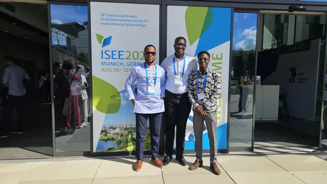
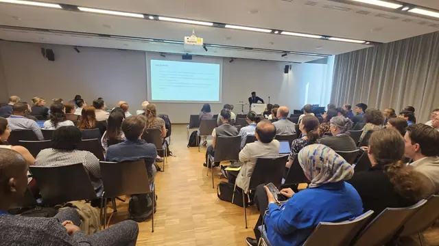
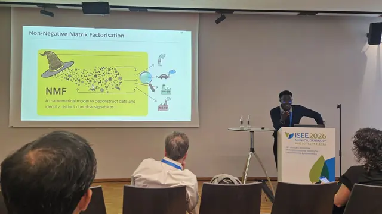
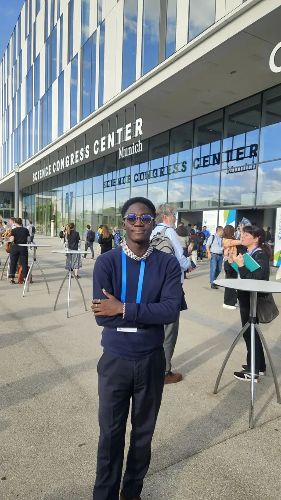
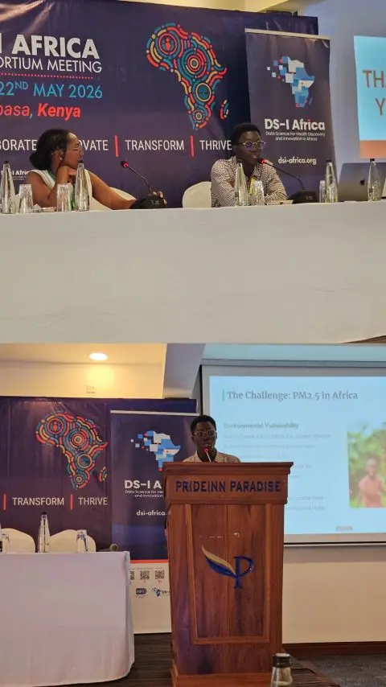
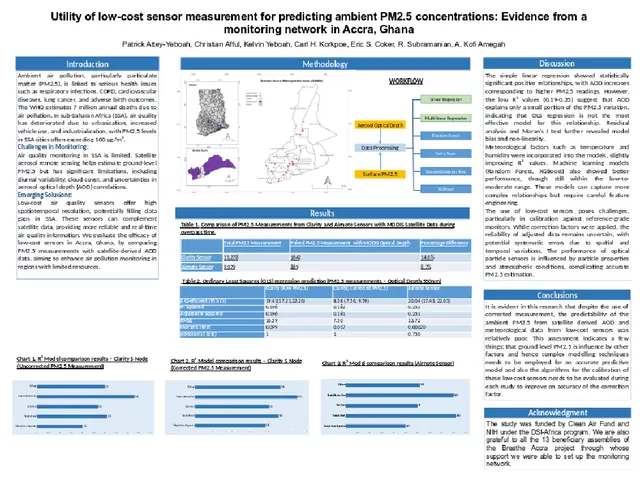
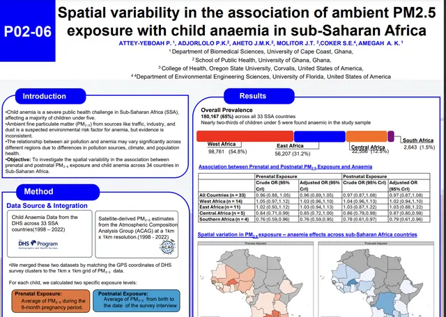
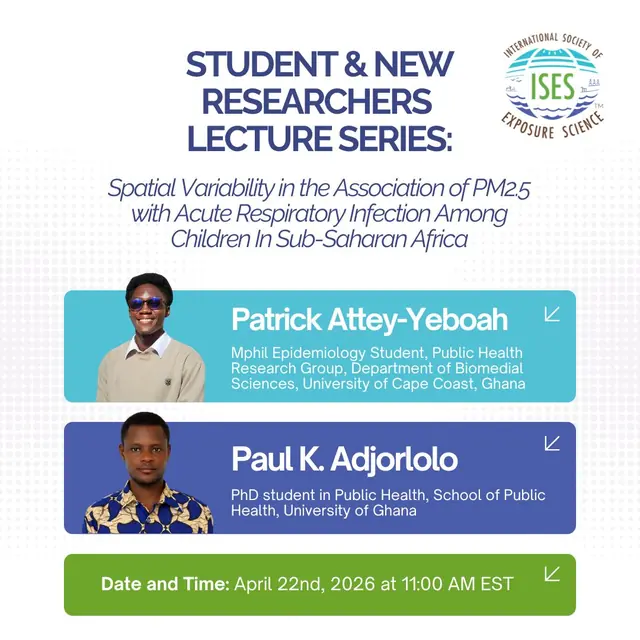

Patrick Attey-Yeboah
Environmental Epidemiologist & Data Scientist
I am an MPhil Epidemiology student in the Biomedical Sciences Department at the University of Cape Coast, working under the DICE Project within the NIH DS-I Africa consortium led by Prof. Kofi Amegah. My work sits at the intersection of environmental epidemiology, spatial statistics, and child health in Sub-Saharan Africa.
Within the DICE Project, I contribute to research examining the spatial variability in the health impacts of ambient PM2.5 exposure across SSA, including the modifying roles of neighbourhood greenness and nutrition. I am also involved in developing multi-temporal exposure models by integrating land use regression approaches with ground and mobile monitoring data.
Methodologically, I apply machine learning-based Land Use Regression models and Bayesian spatial techniques to investigate how air pollution influences child undernutrition and respiratory outcomes. On the applied side, I lead data management and support sensor network operations for the GhanaAQ and Breathe Accra projects, which monitor urban air quality across 13 districts in Greater Accra.
Open to: PhD opportunities · Research collaborations · Speaking & policy engagement
In the Media
Featured Documentary
I was featured in a documentary on air pollution and public health, sharing our work on monitoring urban air quality and understanding its effects on health in Ghana.
Watch on YouTube →Academic Output
Publications
* denotes first or co-first author.
-
Consumption of antioxidant-rich foods attenuates respiratory and cardiovascular health effects in a population highly exposed to air pollution
DOI → -
Spatial variability in the association of ambient PM2.5 exposure with acute respiratory infection among children in Sub-Saharan Africa
ScienceDirect → -
Spatial variability in the association of ambient PM2.5 exposure with child undernutrition in sub-Saharan Africa
ScienceDirect → -
Utility of low-cost sensor measurement for predicting ambient PM2.5 concentrations: evidence from a monitoring network in Accra, Ghana
RSC →
Posters, Presentations & Webinars
Talks




Four presentations at the ISEE Annual Conference
- Symposium (S15): Utility of low-cost sensor measurement for prediction of air pollution concentrations and source apportionment — evidence from the Breathe Accra Project.
- Poster Discussion: Spatial variability in ambient PM2.5–child undernutrition effects in Sub-Saharan Africa: the moderating role of green spaces.
- Flash Talk (on behalf of Kelvin Yeboah): Consumption of antioxidant-rich foods attenuates respiratory and cardiovascular health effects in a population highly exposed to air pollution.
- Flash Talk (on behalf of Paul Adjorlolo): Spatial variability in ambient PM2.5–childhood respiratory infection in Sub-Saharan Africa: the moderating role of green space.

Data Science for Maternal, Child & Environmental Health
Co-presented the DICE GhanaAQ App and presented a poster on spatial variability in PM2.5 exposure effects on child undernutrition.
View poster (PDF) →
Utility of low-cost sensor measurement for predicting ambient PM2.5
Focused on calibration of low-cost sensors using ML to bridge data gaps in African urban environments.
Read publication →
Spatial variability of ambient PM2.5 and child anemia in SSA
Integrated satellite-derived PM2.5 data with DHS survey results to identify critical spatial variations in health risk.
Slides →
Spatial variability in association of PM2.5 with acute respiratory infection
Presented as part of the ISES Student & New Researchers Lecture Series.
LinkedIn post →Methodology
Research & Skills
Air quality monitoring & source apportionment
Developing high-resolution exposure models using low-cost sensors and ML algorithms (Random Forest, Gradient Boosting) across data-sparse African environments. Applies receptor-based source apportionment to characterise pollution sources for policy.
Spatial epidemiology & child health
Applying Bayesian hierarchical spatial models (BYM/BYM2 via R-INLA) to map disease risk across SSA. Works extensively with DHS data to quantify PM2.5 links to childhood stunting, wasting, anemia, and respiratory outcomes.
Statistical programming & GIS
Primarily R (INLA, spdep, tidyverse, sf, Shiny) and Python for ML pipelines and API integrations. Integrates satellite data (ACAG PM2.5, ERA5) with ground sensors via GIS for large-scale exposure assessment.
Featured Work
Tools & Dashboards
Clarity Node-S QC Dashboard
Managing high-frequency sensor data across 13 districts required manual, error-prone data cleaning and device health tracking. I built an interactive dashboard that fetches data via the Clarity API, applies custom QC algorithms, and maps device health spatially — automating maintenance reporting and cutting QA/QC time by over 60%.
Launch live dashboard →Track Record
Experience
-
Research Assistant
Spatial epidemiology of PM2.5 and child health outcomes, multi-temporal LUR model development, and data harmonisation across SSA DHS datasets.
-
Data Manager
Leading cleaning, validation, and spatial integration of high-frequency data from a network of Clarity Node-S sensors. Built QC pipelines and dashboards.
Academic Journey
Education
-
MPhil Epidemiology
Thesis: Spatial variability in the association of ambient PM2.5 exposure with child undernutrition in sub-Saharan Africa.
-
BSc Biomedical Sciences
Foundational training providing the biomedical grounding that underpins my approach to environmental health research.
Get in Touch
Let's Collaborate
I am actively seeking opportunities for research collaborations, webinars, and data science projects in environmental health.